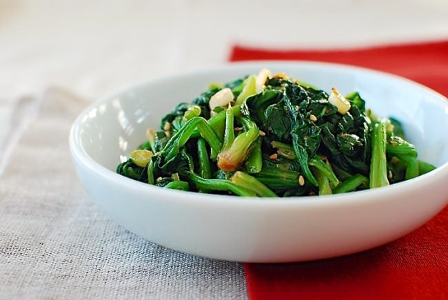

Sigeumchi namul or shigeunchi is a traditional side dish originating from South Korea. This type of namul is prepared with spinach as the key ingredient. The spinach is blanched until slightly crispy and tender. It is then strained and mixed with a combination of garlic, scallions, sesame oil, roasted sesame seeds, and soy sauce.
Meal prep time : 10 minutes
Servings : 2